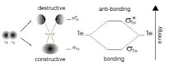
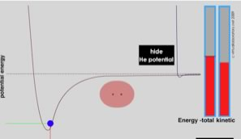
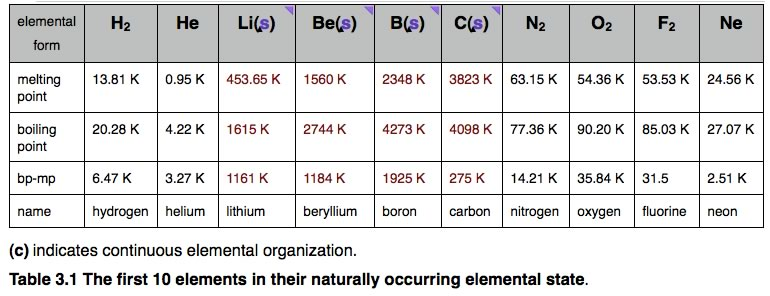

| Chapter 3.2: Elements
and their interactions |
|
“From the 115 elements you can build a near infinity of molecules, of any type you need, to get all the structural and functional diversity you can ask for. There are at least 100,000 different molecules in the human body. Some 900 volatile aroma components have been found in wine. Chemistry is molecules. We are molecules. Chemistry is a truly anthropic science.” - Roald Hoffman (1937) quoted by Natalie Angier in The Canon.) |
3.1 Elements & Bonding |
Since temperature is a measure of the kinetic energy present
in the system, we have to ask; what gives rise to this huge difference?
Is there something fundamentally different going on in these situations?
Other potentially troubling questions may also come to mind, in particular,
how can pure samples of different elements be so different? Why is carbon
either black (graphite) or transparent (diamond)? Why is gold is shiny
and yellow, while sulfur is dull and yellow? Why are most metals (but
not gold or copper) shiny, solid and colorless, while mercury is shiny,
colorless, and liquid? Why are some elements more or less inert (such
as gold, which does not tarnish) while others, such as iron (which rusts)
and phosphorus (which bursts into flames), highly reactive? To answer
these questions will lead to an understanding of the basics of chemistry,
that is how atoms interact with one another under various conditions.
We will approach the answers in a step by step manner. In some cases
where the answers are very complex (e.g. for why gold is yellow and mercury
is a liquid), we will sketch out the answer, but probably not provide
a satisfying explanation. Luckily, most of the chemistry we need to address
is not nearly so arcane! It is worth remembering that there are very few (if any) instances when we come across isolated atoms. While we often describe matter as being composed of atoms, that is a bit of an abstraction – most atoms are “stuck” to other atoms by “bonds” and “interactions”. As mentioned previously, this leads to “emergent” properties which are quite distinct from those of the isolated atoms from which they are composed. It is the interactions between atoms that makes surfaces solid. What is a chemical bond? So back to our original dilemma, namely why is it that the interaction between two hydrogen atoms is so much stronger than that between two helium atoms? One useful model of bonding uses the idea that electrons can be described in terms of orbitals. Each orbital can contain a maximum of two electrons (with opposite spins). In an isolated atom, the electrons are described by atomic orbitals; when in molecules, they are described by molecular orbitals. When atoms approach each other, the atomic orbitals containing their outermost electrons, known as the valence electrons, begin to interact. |
| Because of the wavelike nature of the electron, these interactions can be either constructive or destructive. If they interact in a constructive manner, the interaction is stabilizing, potential energy is decreases and (if it is released into the surrounding system) the two atoms adopt a more stable configuration, they form a bond that holds them together. |  |
| If the interaction is destructive, there is no stabilizing interaction. In the case of hydrogen, each atom has a single (1s) orbital occupied by a single electron. As the atoms approach one another, these 1s orbital electrons interact to form two possible molecular orbitals - a lower energy, constructive or bonding molecular orbital and a higher energy, destructive or anti-bonding molecular orbital. Notice that the bonding molecular orbital, a so-called σ1s (sigma) orbital, has electron density (that is a high probability that the electrons would be found there if we looked) between the two hydrogen nuclei. In the anti-bonding molecular orbital, known as σ*1s, the electrons are mostly not between the nuclei. One way to think about this is that in the bonding orbital, the protons in the hydrogen nuclei are attracting both electrons – one from each atom, and it is this common attractive force between electrons and nuclei that holds the two hydrogen atoms together, whereas in the anti-bonding orbital, there is little electron density between the two nuclei and any electrons in that orbital are actually destabilizing the system by enhancing the repulsive interactions between the nuclei (can you provide a short reason why this would be the case?) Just like an atomic orbital, each molecular orbital, both bonding and anti-bonding, can hold two electrons. In the case of two approaching hydrogens there are only two electrons present in the system and the lowest energy state would have them both in the bonding orbital. Typically, both electrons in a H-H molecule are found in the lower energy (more stable) σ1s bonding orbital. This arrangement of electrons is referred to as a covalent bond; this is the arrangement that requires temperatures of ~ 5000K to break. (That is it requires a lot of energy to break a covalent bond). Now let us take a look at what happens when two helium atoms approach. Each He atom has two electrons in its 1s orbital. As the orbitals approach they interact and again produce two molecular orbitals, the bonding σ1s orbital and the anti-bonding σ*1s orbital. The σ*1s molecular orbital has no electron density between the two He nuclei, and has considerably higher energy than the atomic orbitals of the isolated atoms. Since there are 4 electrons present in the two He atoms and only two can occupy the σ1s bonding orbital, the other two have to go into the σ*1s anti-bonding orbital. The end result is that the decrease in potential energy (increased stability) associated with occupying the bonding orbital is more than off-set by the increased energy associated with occupying the σ*1s anti-bonding orbital. So, the end result is no overall stabilization, no decrease in energy associated with bond formation; no covalent bond is formed. The only interactions between helium atoms are the van der Waals interactions that occur between the two atoms which depend exclusively on London dispersion forces, as discussed in Chapter 1. The interaction between two helium atoms is very similar to that between two covalently bonded H2 molecules. There is no possibility of stabilizing molecular orbitals forming and as in the case of the He atoms, hydrogen molecules (H-H or H2) will interact exclusively through London dispersion forces. The LDFs will be somewhat stronger, however, since there is a larger surface area over which they can interact. The idea that – all other things being equal - all systems will tend to move to the lowest accessible energy state (losing the excess energy to its surroundings), is applicable to a wide range of situations. The potential energy of the system falls as the distance between the atoms decreases, until the system reaches a balance between the stabilizing interaction of bond formation, and the destabilizing repulsion of the two nuclei. This minimum energy is called the bond energy, and this amount of energy must be supplied to the system to break the two atoms apart again. The distance between the nuclei when the bond energy is at its minimum is the bond length. |
| The driving force behind the formation of chemical bonds is increased stability. When a bond is formed between two atoms, energy is always released to the surroundings, and the new material is always more stable than the two separate atoms. Since energy is conserved, a bond cannot form unless this bond energy is transferred from the interacting atoms to the rest of the system. |  |
Making bonds is always exothermic (meaning that energy is released not absorbed). This implies that energy (from the surrounding system) is always needed to break a bond. To break a bond, energy must be transferred from the system. Bond breaking is endothermic. When we talk about more complex chemical reactions, these generally involve both bond breaking and bond formation; we will find that the overall reaction is exothermic if more energy is released from bond formation than is used for bond breaking. Conversely a reaction will be endothermic (that is, uses energy) if more energy is required to break bonds than is released in bond formation. The important point is that we have to consider the system as a whole, including all of the bonds formed and broken. We will come back to this topic (in much greater depth) in chapters 5 and 7. Discrete versus continuous molecules: Having considered the bonding situation with H and He, the simplest two elements, we can now move on to consider other elements and the types of molecules that they form. In this discussion, we begin with molecules made up of a single type of atom, more complex molecules made of atoms of multiple elements will be considered in the next and subsequent chapters. As the number of protons in the nucleus of an element’s atoms increases, from 1 in hydrogen to 10 in neon, we find dramatic changes in physical properties, which correlate with whether the elemental form is “discrete” or “continuous”. The discrete forms are either monoatomic - meaning that they exist as separate atoms (such as He and Ne) with no covalent bonds between them (although they do interact via van der Waals interactions) or diatomic molecules (such as H2, N2, O2, and F2), meaning that they exist as molecules that have only two atoms. These types of elements have very low melting points, that is, the temperatures at which they change from a solid to a liquid, and low boiling points, where they change from a liquid to a gas. |
| But don’t confuse these “phase transitions” with the breaking of a diatomic molecule into separate atoms. Phase transitions, which we will discuss in greater detail later, involve disruption of intermolecular (between molecules) interactions (such as London dispersion forces) rather than intramolecular (within a molecule, between atoms) interactions, that is, covalent bonds. |

In contrast to the elements that form discrete molecules, the atoms of the other elements we are considering (that is Li, Be, B, C) interact with one another in a “continuous” manner, they do not form discrete molecules, but rather form ensembles of atoms in which the number of atoms can range from the small to the astronomical (very, very large). In these ensembles, whether they are at the nano- or the macroscopic levels, the atoms are held together by bonds that, like the bond in H-H, are very difficult to break. That is, a lot of energy must be put into the system to separate the component atoms. A consequence of this difference in organization is a dramatic increase in both the melting and boiling points compared to atomic (He, Ne) and molecular (H2, N2, O2, and F2) species. The reason is that when a substance changes from solid to liquid (that is, at the melting point) the component particles have to be able to move relative to each other. When the substance changes from a liquid to a gas (that is, at the boiling point) the particles have to separate entirely. Consequently the magnitude of the melting and boiling points gives us a relative estimate of how strongly the particles are held together in the solid and liquid states - as we have already, seen temperature is a measure of the average kinetic energy of the molecules in a system. |
For elements that exist as discrete atoms or molecules, the only forces that are holding the particles together are London dispersion forces, giving rise to van der Waals interactions – which are relatively weak compared to covalent bonds. However the elements that exist as extensive networks of atoms joined by bonds, require much more energy to break as the material goes from solid to liquid to gas. |
3.1
Elements & Bonding |
Question to answer:
Questions for late:
|
| 27-Jun-2012 |